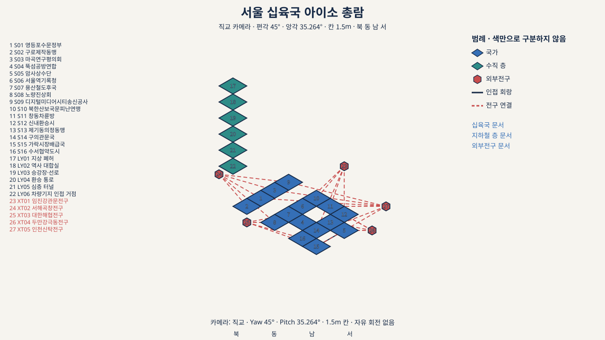
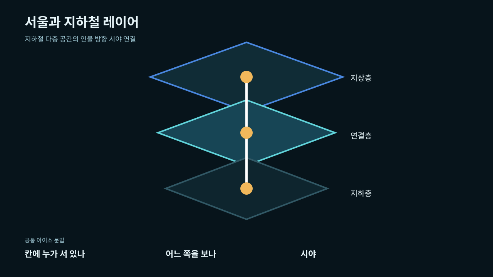
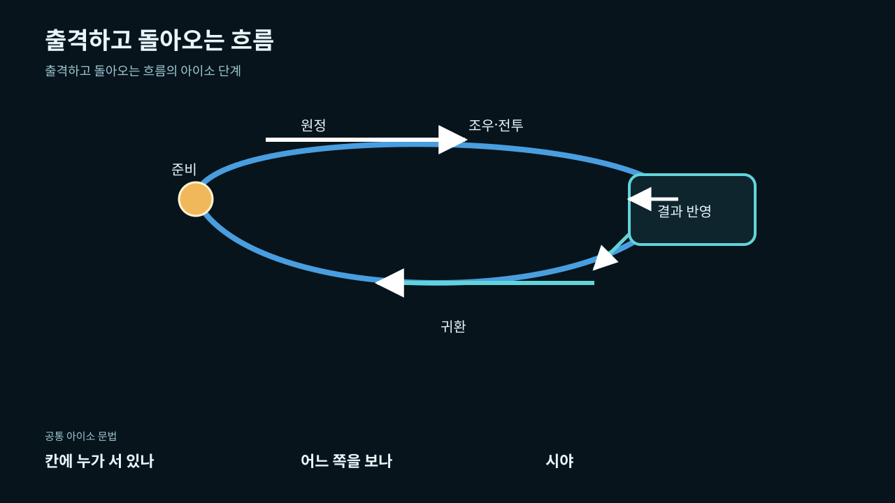
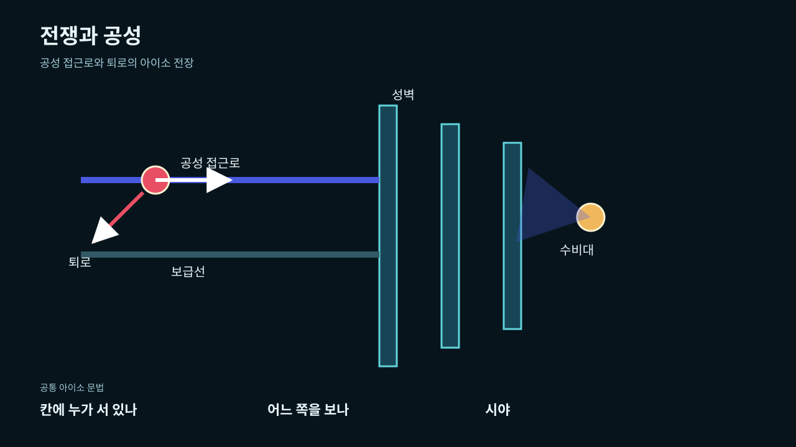

2026 가상융합산업허브 가상융합랩 1인 개발자 인프라 & 공간 무상 지원 · 2026-2차 모집
사업계획서(콘텐츠소개서)
0. 신청 개요와 지원 목적
| 개발 아이템명 | 서울:전국 — 게이미피케이션 캐릭터 IP 플랫폼 (첫 제품: PC 4X+RPG 게임) |
|---|---|
| 형태 | 게임(PC 4X+RPG) + AI 생성 게임 에셋 파이프라인 + 캐릭터 챗 확장 |
| 기술 분야 | [확인 필요: 기타(게임·AI 콘텐츠) 권장] |
| 신청 구분 | 1인 창조기업(기창업) — 「1인 창조기업 육성에 관한 법률」 기준, 상시근로자 없음 |
| 지원 신청항목 | 고성능 서버 인프라, 개인용 개발 장비, AI 모델 최적화 및 배포, 콘텐츠 경량화, 개인 개발 공간 — 전부 |
| 지원 희망기간 | 2026. 11. ~ 2027. 4. (6개월) |
이번 지원에서 가장 큰 목적은 하나로 모인다. AI 생성 게임 에셋을 실제 상용 규모로 찍어내는 파이프라인을 완성하는 것이다. 지금은 원격 GPU 호스트에 의존해 배치 생성에 하루 며칠씩 걸린다. 가상융합랩의 A6000 서버와 온프레 LLM 기술지원이 붙으면, 초상·3D 소품·UI 후보를 상시로 뽑아내는 체계로 넘어간다. 게임 완성 속도가 이 체계에 달려 있다고 본다.
1. 개발 아이템 소개
서울:전국은 한 세계의 캐릭터 자산 위에서 여러 사업으로 뻗어가는 게이미피케이션 캐릭터 IP 플랫폼이다. 단일 게임으로 끝나지 않는다는 뜻이다.
- 첫 제품은 게임. 붕괴 110년 뒤의 후세 서울. 지하철 노선과 역으로 재편된 도시에서 무명 인물과 파티를 이끌며 탐사·확장·개발·정복(4X)을 벌이고, 인물의 성장·관계·생업(RPG)을 쌓는 PC용 4X+RPG. 전투는 턴제가 아니다 — 전투 전 진형 편집, 전투 중 카드 타이밍으로 개입하는 실시간 전투다.
- 캐릭터 자산이 플랫폼의 몸통. 16개 역 사회 국가, 이름 있는 인물 1,001명(가치관·욕망·관계·출처 원장 포함), 적대 집단 27개, 서사 배치 47건, 몬스터 배치 42건. 구조화된 이 원장이 게임을 넘어 캐릭터 챗과 콘텐츠 전개의 원료가 된다.
- 에셋은 AI로 찍어낸다. 초상 생성 툴, 3D 생성, 로스터 생성기를 이미 돌리고 있다. 개발 과정은 X(트위터)에 공개했고 반응을 확인했다. [확인 필요: 포스트 링크]
게임의 다섯 특징: 실패가 세계에 남는다. 인물이 정치의 단위다. 노선이 영토이자 물류다. 전투는 전략의 결과다. 모든 상태 변화가 사건 원장으로 추적된다.
2. AI 생성 에셋 파이프라인 — 이번 지원의 핵심 기술수행능력
- 3D·2D 생성: TRELLIS로 역사 소품 6종을 만들어 출처 검증(BOM)을 통과시키고 런타임에 승격했다. 3역할 캐릭터도 같은 길을 밟았다. UI 키트 9종이 후보 검수 대기 중이다.
- 출처·권리 게이트: 생성물마다 출처·도구·변환 이력을 기록한 BOM을 통과해야 런타임에 오른다. 저작권 리스크를 코드로 막는 셈이다.
- X 공개: 툴 개발 과정 포스팅. [확인 필요: 링크]
게임 엔진·아키텍처
- Unity 6000.7.0a5 + URP 17.7.0, Input System, TextMeshPro, VContainer DI
- 엔진 비의존 Core / Unity Foundation 2층 구조. 같은 시드와 명령 기록이면 같은 상태·원장 해시가 나오는 결정론 계약
- 30Hz 고정 틱 실시간 진형·카드 전투 Core — 분대 명령, 사기, 항복, 틱 스탬프 기록 포함
검증 인프라
- Unity EditMode/PlayMode 테스트를 batchmode로 돌린다. 동일 시드 재현, 중복 정산 거부가 기계로 검증된다.
- Node 검증 도구셋 — 위키 드리프트 검사, 아트 BOM 검사, 지역 총람 전수 재대조(427동, 후보 원장 1,011,022건)
- 기증 3D·SFX·VFX 패키지 통합, Spine 캐릭터 경험
3. 확보된 게임 로직과 데이터 개발완성도
대전략 축 — 서울 전역을 데이터로 묶었다
무대가 되는 서울 전체를 데이터로 구축해뒀다. 2026년 7월 행정구역 기준 25구 427동 전수. 지하철 334역과 간선 435구간이 이동 그래프로 연결돼 있고, 동별 주민·생업·위험·행동 후보 원장 1,011,022건을 전수 재대조 도구가 검증한다. 대전략 게임의 뼈대인 영토·노선·물류 관리가 이 데이터 위에서 돌아간다. 열람용 지역 총람 아틀라스도 별도로 구축했다.
확보된 규칙
- 캠페인 루프 6단계(교섭·우회 포함) — Unity POC에서 세 역 노선으로 구현 완료, batchmode 재현성 검증 통과
- 실시간 진형·카드 전투 Core(30Hz) — 분대 명령·집계 사상자 표현만 남았다
- 결정론·세이브 계약 — 같은 시드+명령 기록 = 같은 상태. 방송·클립 확산에도 유리한 구조
- 캐스트 원장 — 16국 1,001명, 관계 수 계약 검증 도구 운영 중
- 웹 코어 루프 POC — 브라우저에서 거점→목적지→조우→진형→실시간 전투→정산→귀환까지 조작 가능(공개 배포)
지금 진행 중인 설계 (별도 머신 Codex 협업)
오너 캐릭터(여러 권역과 거래하는 거대 상단의 수장)를 딥인터뷰 기반으로 설계하고 있다. 정보 판단 시스템 — 경험·소문·증언을 조합해 '보증 장부' 같은 판단 축을 만드는 설계 — 도 같이 진행 중이다. 창작 지명을 실존 역명으로 정규화한 작업은 이미 main에 반영됐다.
4. 화면과 시각 자료







소개 영상은 아직 없다. 살아 있는 데모로는 공개 웹 POC와 위키 미러가 지금 접근 가능하고, 트레일러 제작은 2027.4 마일스톤(A6000 렌더)에 들어 있다.
5. 가상융합랩 인프라 활용 계획 활용도
| 지원 자원 | 활용 계획 |
|---|---|
| RTX A6000 48GB GPU 서버 | AI 에셋 배치 생산의 본진. 초상·3D 소품·UI 후보의 대량 생성과 고해상도 렌더를 상시로. 현재 원격 RTX 4080 호스트 의존(대기 발생)에서 벗어난다 |
| 온프레 LLM 배포·추론·서빙 최적화 지원 | ① 캐릭터 챗 파일럿 — 1,001명 원장(가치관·관계)을 프롬프트 소스로 로컬 추론 ② 인물 프로필·서사 초안 생성의 로컬 이관(비용·프라이버시) |
| 고성능 워크스테이션(RTX 5080) | Unity 에디터·URP·Spine·베이크 상시 작업. 빌드 병목 해소 |
| MacBook Pro M4 Max | 이동 개발·현장 검증·외부 미팅 연속성 |
| 3D 콘텐츠 고도화·최적화 지원 | 이소메트릭 씬 드로우콜·라이팅 최적화 자문, 콘텐츠 경량화와 연결 |
| AWS G6e / VM·K8s | 배치 렌더·빌드 잡, 장기 데이터 처리(지역 원장 재대조) |
| 개인 개발 공간·회의실 | 집중 개발, 외부 협업자 미팅 |
6개월 마일스톤 (2026.11 ~ 2027.4)
| 시기 | 목표 | 판정 기준 |
|---|---|---|
| 2026.11 | 입주·장비 이관, 워크스테이션 환경 전환 | 빌드 파이프라인 신규 장비 green |
| 2026.12 | 초상 합성 파이프라인 완성(A6000 배치 생산 개시) + 시각 수용 통과 | 합성 툴 E2E green, 4축 독립 PASS |
| 2027.1 | 슬롯 연결 — 승격 에셋 전수 런타임 연결 | 임시 비주얼 0 |
| 2027.2 | 캐릭터 챗 파일럿(온프레 LLM) | 원장 기반 대화 데모 동작 |
| 2027.3 | 최종 수용 게이트(아키텍처·PlayMode·시각·BOM·빌드) | POC 슬라이스 전 게이트 PASS |
| 2027.4 | 16국 캠페인 설계 확정 + 트레일러(A6000 렌더) | 설계 승인, 영상 1편 |
6. 상용화 계획 상용화
- 게임(첫 수익원) — Steam(PC) 출시. POC 완료 → 16국 캠페인 → 얼리억세스 검증 → 정식 출시. 가격 [확인 필요]. 한국어 원문, 영어 지원.
- 캐릭터 챗(확장) — 1,001명 원장을 프롬프트 소스로 삼는 게이미피케이션 캐릭터 챗. 게임 발매로 인지도를 만든 뒤 연결한다. 허브의 온프레 LLM·서빙 최적화가 파일럿부터 직접 쓰이는 영역이다.
- 툴·에셋 라이선스(병행) — AI 에셋 파이프라인 자체의 외부 제공·기술 자문 가능성.
- 성과 보고 — 입주 후 2년간 사업성과 정보 제공 동의. 매출·상용화 진척을 성실 보고한다.
7. 사업성 사업성
시장. 전략·RPG는 PC에서 안정적 니치다(문명·Crusader Kings 계열, 동급 인디의 얼리억세스 성과). 캐릭터 챗·AI 컴패니언 시장은 성장 중이고, 게이미피케이션·IP 기반 차별화가 먹히는 국면이다. 한국 배경·한국어 원문은 국내외에서 동시에 차별점이 된다.
차별점.
- 후세 서울 지하철망 — 실존 427동·334역 데이터 기반의 유일한 무대
- 실시간 진형·카드 전투 — 검증된 문법(지도 턴 4X+실시간 전투)을 한국적 소재로
- 1,001명 구조화 캐릭터 원장 — 게임을 넘는 IP 자산, 캐릭터 챗으로 직결
- 자체 AI 에셋 파이프라인 — 사람·초상·프로필 생성을 코드로 소유. 외부 서비스 의존이 작다
- 결정론·원장 설계 — 세이브·재현·분석이 견고해 방송·클립 확산에 유리
리스크와 대응. 1인 개발 범위 리스크는 게이트 통과 전 다음 모듈 금지 원칙으로 통제한다. 아트 병목은 AI 파이프라인·기증 에셋·GPU 인프라로 녹인다. 확장 사업 조기 도산 리스크는 단계 진입(캐릭터 챗은 게임 발매 이후, 파일럿은 허브 인프라로 최소 비용)으로 막는다.
8. 기대 효과
- 개인 — 6개월 집중 개발로 POC 완결, AI 에셋 배치 생산 체계와 캐릭터 챗 파일럿 확보, 상용화 직전 도달
- 허브 — 생성 AI 1인 게임 개발 실증 사례(온프레 LLM 캐릭터 챗·GPU 초상 배치 생산), 국내 소재 게임+캐릭터 IP 확장 육성, 2년 성과 보고로 사업 실적 자료 제공
부록 A — 제출 전 체크리스트
- 이용신청서(붙임 양식 HWP) 작성 — 아래 부록 B의 기입값 참조
- 본 사업계획서 PDF 제출 (각 서류 3MB 이내)
- 개인정보 수집·이용·제공동의서 1부
- 사업자등록증 스캔(1인 창조기업) — 매출·투자 증빙은 해당 시
- 이메일 접수 info@metaversehub.kr — 2026-09-22(화) 14:00 마감(이후 수신 무효)
- 문의 — 가상융합산업허브 운영사무국 031-5182-9241
부록 B — 이용신청서 기입표 (HWP에 옮겨 적을 값)
| 양식 항목 | 기입값 |
|---|---|
| 기술 분야(택 1) | [확인 필요] 권장: 기타(게임·AI 콘텐츠) |
| 기업 구분(해당 모두) | ☑ 1인 창조기업 [ 나이대로 청년(39 이하)/중장년(40 이상) 병행 체크 여부 확인 ] |
| 개발 아이템명 | 서울:전국 — 게이미피케이션 캐릭터 IP 플랫폼 |
| 기업(단체)명 | [ 사업자등록상 상호 ] |
| 법인·사업자등록번호 | [ 사업자등록번호 기입 / 법인이면 법인등기번호 추가 ] |
| 설립·창업일 / 투자 유치액 | [ 사업자등록상 개업일 기입 / 투자 유치 시 금액 ] |
| 지식재산권(등록/출원/인증) | [ 건수 — 해당 시 ] |
| 대표자 성명·생년월일·휴대전화·성별·이메일 | 성명 옹예지 · 나머지 [ 개인정보 입력 ] |
| 지원 희망기간 | 2026. 11. ~ 2027. 4. |
| 지원 신청항목(복수) | ☑ 고성능 서버 인프라 ☑ 개인용 개발 장비 ☑ AI 모델 최적화 및 배포 ☑ 콘텐츠 경량화 ☑ 개인 개발 공간(전용룸) |
| 확인·동의 2건 | ☑ 허위 시 선정 취소 등 확인 ☑ 2년간 사업성과 정보 제공 동의 |
| 신청일·신청인(서명) | [ 2026. 9. . ] / [ 성명 ] (인) |
본 문서는 2026-2차 모집 공고문·붙임 신청서 양식(공개 게시물 idx=173872535 첨부) 기준의 검토용 드래프트다. 프로젝트 사실은 작성일 기준 저장소 실측(설계 문서·배포 자산·검증 도구 출력)에서 뽑았고, 게임 제목은 서울:전국 개명(merge 대기 PR)을 따랐다.